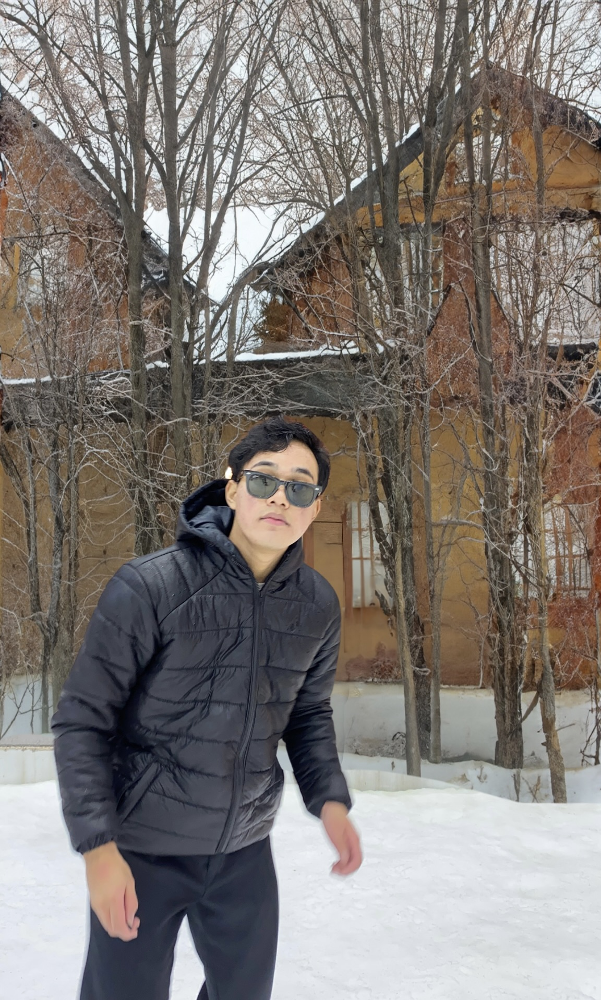
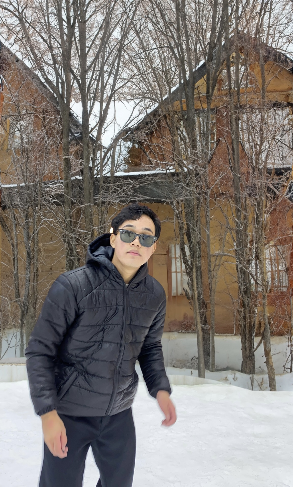
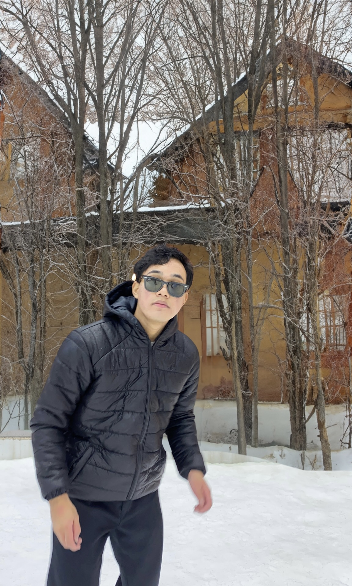

Hi, I’m Rudi Pradnyana, a filmmaker, photographer, and YouTuber originally from Bali. I spent 1.5 years living in Adelaide, which greatly influenced my passion for storytelling. With a background in both self-taught and formal learning, I’ve been creating cinematic vlogs focused on self-improvement on YouTube, which has gained significant recognition. My works aim to inspire and empower individuals to grow through engaging visuals and thought-provoking content.
I love to travel wherever I want, and I had gone to many beautiful places.

go to NEWS page if you're interested